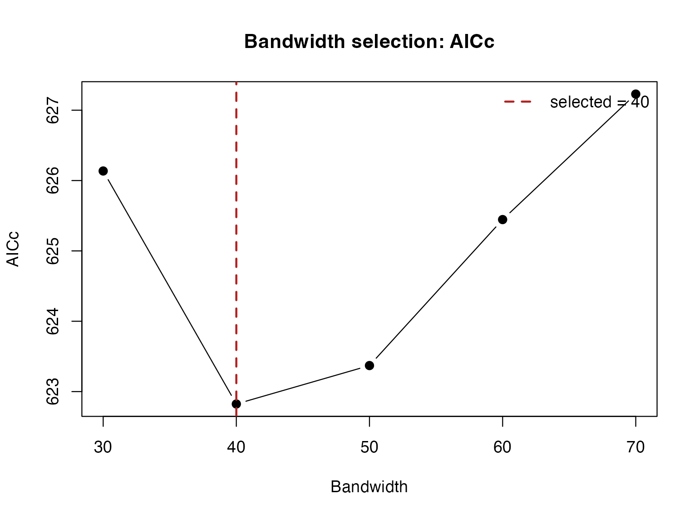
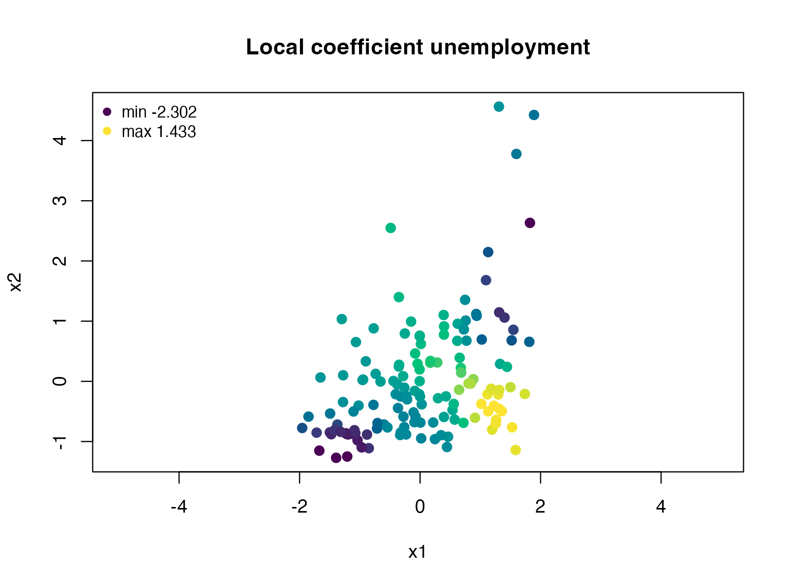
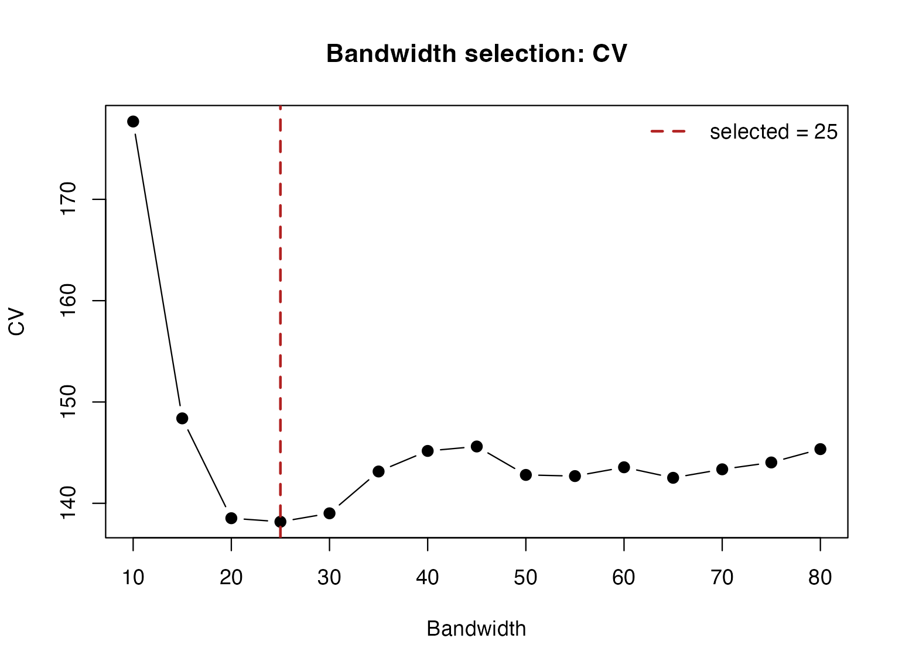
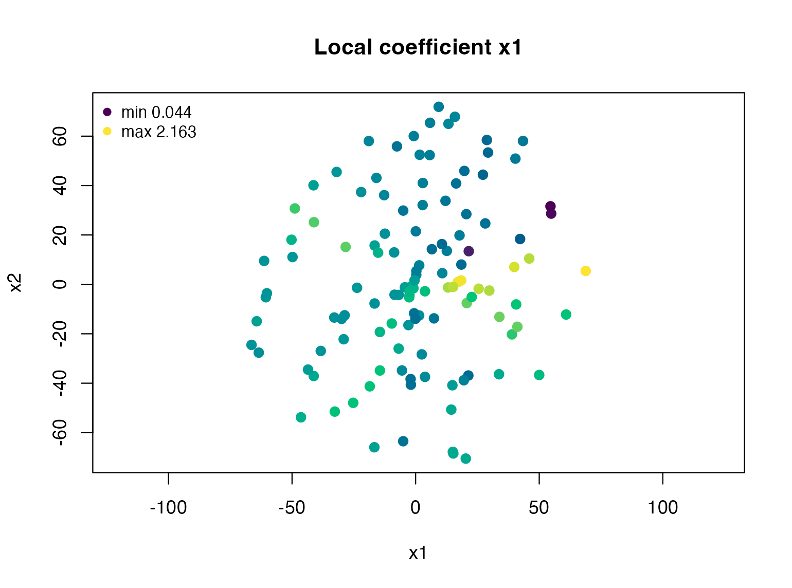
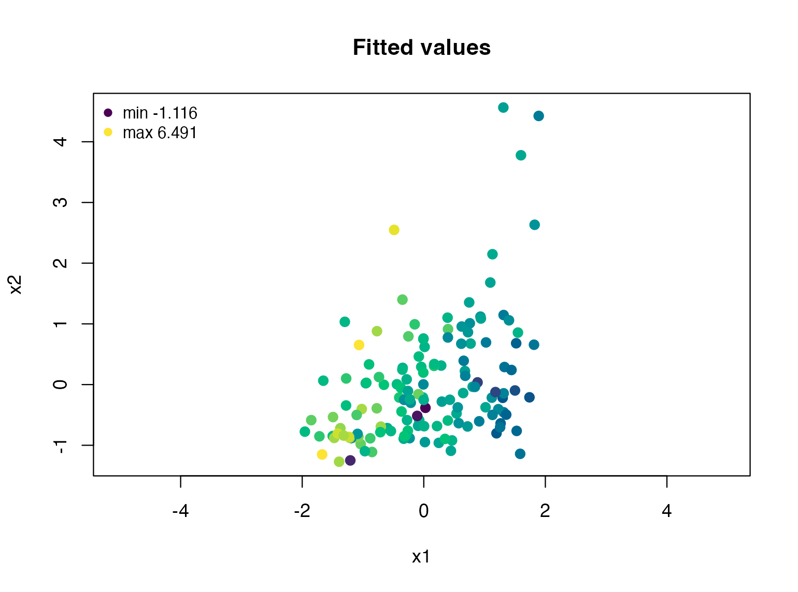
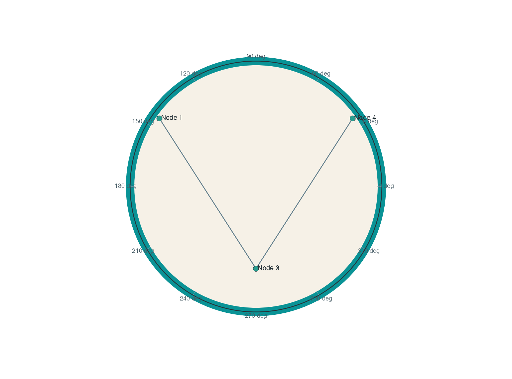

An Introduction to LHWL
Bahadır Yüzbaşı and Zühal Küçükarslan Yüzbaşı
Source:vignettes/lorentz-hgwr-introduction.Rmd
lorentz-hgwr-introduction.RmdWhat LHWL does
LHWL provides regression whose neighbourhoods are
defined by a representation on the Lorentz model of hyperbolic space.
The response and predictors remain ordinary variables. Geometry
determines which observations are close, rather than changing
the meaning of a response or turning a regression coefficient into a
geometric coordinate.
Lorentz Hyperbolic Weighted Regression (LHWR) is the original unpenalized foundation. Lorentz Hyperbolic Weighted Penalized Regression (LHWPR) adds regularization and focal variable selection. This guide starts with LHWR; the companion LHWPR-Lasso tutorial develops the sparse extension. The package’s software citation is Yüzbaşı and Küçükarslan Yüzbaşı (2026). Manuscript identifiers will be added after the corresponding public records are available.
Two LHWR companions develop the research workflow in detail: kernels, bandwidth selection and diagnostics and visualizing and reporting results. The first covers CV/AICc, F1–F3, Moran/LISA and their interpretation; the second provides paired coefficient/significance panels, uncertainty and residual maps, network overlays and non-overwriting PDF/PNG export recipes.
When a hyperbolic representation is worth considering
Hierarchy, branching and relational similarity can make geographic distance an incomplete description of locality. For example, a country may resemble its trade-network neighbours more than nearby countries. A hyperbolic representation is a candidate when such relations have a scientifically defensible role in defining local regression weights.
For unit curvature minus one, a two-dimensional hyperbolic ball of radius r has area 2\pi(\cosh r-1). Here r\geq0 is intrinsic distance from the ball’s centre, in unit-curvature units. Its exponential large-radius growth provides geometric capacity for branching structures: a regular tree with b>1 children per node has b^\ell nodes at level \ell=0,1,2,\ldots. This is a motivation for investigating a representation, not evidence that an arbitrary network is hyperbolic or that LHWR will outperform another model.
Use domain knowledge, representation diagnostics, local support and sensitivity checks to justify locality. A global model may be sufficient when coefficients are essentially constant. Poorly supported local neighbourhoods can increase variance. A valid hyperboloid coordinate matrix alone does not demonstrate model suitability, predictive improvement or causal identification.
Installation and help
R >= 4.1.0 is required. Source installation also requires a C++17
toolchain and the declared Rcpp and
RcppArmadillo dependencies. Optional OpenMP supports
focal-location parallelism; serial execution is supported and is the
default. No package installation or network download is performed by
this vignette.
Install a reviewed local source archive with
R CMD INSTALL, or install the development version from the
public GitHub repository:
remotes::install_github("byuzbasi/LHWL", build_vignettes = TRUE)After acceptance on CRAN, the stable channel will be
install.packages("LHWL"). GitHub availability does not
imply CRAN acceptance.
Quick start: a complete LHWR analysis
The packaged wdi_lhwr dataset makes this example
runnable offline. We reuse the complete 2024 sample from the package
README. The response is annual GDP growth (percentage points).
Unemployment and internet use are standardized over that sample as
regressors. The supplied representation uses log GDP per capita and
trade openness, with the frozen transformation constants documented in
?wdi_lhwr; those two representation features are not
additional regressors in this formula.
data("wdi_lhwr")
wdi <- subset(wdi_lhwr, year == 2024)
Z_wdi <- as.matrix(wdi[, c("z0_lorentz", "z1_lorentz", "z2_lorentz")])
wdi_model <- data.frame(
gdp_growth = wdi$gdp_growth,
unemployment = as.numeric(scale(wdi$unemployment)),
internet_users = as.numeric(scale(wdi$internet_users))
)
stopifnot(nrow(Z_wdi) == nrow(wdi_model), !anyNA(wdi_model))
check_lhwr_Z(Z_wdi)
knitr::kable(
head(data.frame(country = wdi$iso3, wdi_model), 5),
digits = 3,
col.names = c("Country", "GDP growth", "Unemployment", "Internet use"),
caption = "First five observations; regressors are standardized."
)| Country | GDP growth | Unemployment | Internet use |
|---|---|---|---|
| AGO | 4.953 | 1.528 | -1.332 |
| ALB | 4.046 | 0.863 | 0.492 |
| ARG | -1.343 | 0.157 | 0.646 |
| ARM | 5.900 | 1.206 | 0.309 |
| AUS | 1.373 | -0.483 | 0.907 |
We select an adaptive neighbour count over five explicitly supplied candidates using Gaussian AICc. This is a short usage example, not a new empirical study or a recommendation that this grid is adequate for every application.
wdi_bw <- bw.lhwr(
gdp_growth ~ unemployment + internet_users,
data = wdi_model, Z = Z_wdi,
approach = "AICc", bw_grid = seq(30, 70, by = 10), engine = "knn"
)
wdi_fit <- lhwr(
gdp_growth ~ unemployment + internet_users,
data = wdi_model, Z = Z_wdi, bw = wdi_bw$bw,
engine = "knn", diagnostics = "full"
)
summary(wdi_fit)
#> Summary of LHWR
#> Geometry-aware local linear regression on hyperboloid locations
#> ------------------------------------------------------------------------
#> Call:
#> lhwr(formula = gdp_growth ~ unemployment + internet_users, data = wdi_model,
#> Z = Z_wdi, bw = wdi_bw$bw, engine = "knn", diagnostics = "full")
#>
#> Calibration
#> Setting Value
#> Family gaussian
#> Geometry Lorentz hyperboloid (intrinsic)
#> Distance Lorentz hyperboloid
#> Kernel bisquare kernel
#> Diagnostics Full
#> Bandwidth 40 nearest neighbors
#> Bandwidth type Adaptive nearest-neighbor radius
#>
#> Diagnostics
#> Metric Value
#> Residual sum of squares 456.092000
#> AIC 612.854000
#> AICc 622.824000
#> BIC 682.428000
#> Trace of hat matrix 22.594200
#> Trace of S'S 15.146700
#> Effective parameters 30.041700
#> Effective degrees of freedom 110.958000
#> Residual variance 4.110480
#> Local-model R-squared 0.488618
#> Adjusted local R-squared 0.354771
#> Median local condition number 23.800500
#> Maximum local condition number 83.829800
#> Minimum effective sample size 16.057200
#> Median effective sample size 24.601300
#> Minimum positive kernel weights 40.000000
#> Median positive kernel weights 40.000000
#>
#> Local coefficient summaries:
#> Min. 1st Qu. Median Mean 3rd Qu. Max.
#> Intercept 1.06881 2.79625 3.46849 3.53748 4.24133 5.984
#> unemployment -2.30152 -0.97675 -0.50958 -0.46688 0.03353 1.433
#> internet_users -4.17939 -1.37524 -0.24509 -0.38548 0.82610 2.936
#> ------------------------------------------------------------------------summary() reports the spread of local coefficients and
model diagnostics. It does not estimate one common slope. A local
unemployment coefficient is a fitted GDP-growth change per one sample
standard deviation of unemployment, holding internet use fixed within
that local regression. It is a conditional association, not a causal
effect.
plot(wdi_bw)
AICc at the evaluated neighbour counts. The selected point minimizes this criterion on the supplied grid.
plot(wdi_fit, coefficient = "unemployment")
Local unemployment coefficients in the spatial-coordinate projection of the Lorentz representation. These are representation coordinates, not longitude and latitude or Poincare-disk coordinates.
Use standard extractor methods for coefficients, fitted responses and residuals. Fitted responses describe calibration on these observations; they do not measure performance on unseen observations.
knitr::kable(
head(data.frame(
country = wdi$iso3, observed = wdi_model$gdp_growth,
fitted = fitted(wdi_fit), residual = residuals(wdi_fit)
), 5),
digits = 3, caption = "Calibration fitted values and residuals."
)| country | observed | fitted | residual |
|---|---|---|---|
| AGO | 4.953 | 3.237 | 1.716 |
| ALB | 4.046 | 3.578 | 0.468 |
| ARG | -1.343 | 3.032 | -4.375 |
| ARM | 5.900 | 4.320 | 1.580 |
| AUS | 1.373 | 1.174 | 0.200 |
Data and representation contract
data supplies the variables in formula.
Z is a numeric matrix with one row per observation and
three columns: time, first spatial coordinate, second spatial
coordinate. Row alignment is positional, not an automatic join by
country or node name. Join and filter deliberately before fitting;
retain identifiers separately. Do not independently sort
data and Z. Missing values require an explicit
analysis-sample decision; this guide does not introduce an imputation or
exclusion rule.
| Input | Meaning |
|---|---|
| formula | Response and regression predictors; representation features are separate |
| data | One analysis row per observation |
| Z | n by 3 valid upper-sheet Lorentz coordinates, in the same row order |
| bw | Neighbour count for adaptive kNN; radius for fixed distance |
| newdata and Znew | Aligned prediction predictors and coordinates in the training representation |
Constructing coordinates from two features
The feature constructor accepts exactly two meaningful numerical
components. Here the four rows are a coordinate demonstration only, not
a regression sample. With scale = TRUE, the components are
centred by their sample means and scaled by their sample standard
deviations.
features <- data.frame(
score_1 = c(-1.0, -0.2, 0.4, 1.1),
score_2 = c(0.7, -0.4, 0.1, -0.6)
)
Z_features <- make_lhwr_Z_features(features, scale = TRUE)
check_lhwr_Z(Z_features)For prepared components u_1,u_2\in\mathbb R, the constructor returns z=(\sqrt{1+u_1^2+u_2^2},u_1,u_2). This lift places the components on the upper hyperboloid. Their scale changes distances and regression neighbourhoods; it is a modelling choice, not a cosmetic plot setting.
The constructor does not return a fitted preprocessing object
containing the centring and scaling constants. If prediction is
intended, save the training constants explicitly and call it with
scale = FALSE on the prepared coordinates. The following
small example reproduces the training coordinates and applies exactly
the same transform to one new row:
feature_center <- colMeans(features)
feature_scale <- vapply(features, sd, numeric(1))
stopifnot(all(is.finite(feature_scale)), all(feature_scale > 0))
prepare_features <- function(x) {
sweep(sweep(as.matrix(x), 2, feature_center, "-"),
2, feature_scale, "/")
}
Z_train_demo <- make_lhwr_Z_features(prepare_features(features), scale = FALSE)
new_features <- data.frame(score_1 = 0.2, score_2 = -0.1)
Z_new_demo <- make_lhwr_Z_features(prepare_features(new_features), scale = FALSE)
stopifnot(max(abs(Z_train_demo - Z_features)) < 1e-12)Constructing coordinates from a network
The package provides shortest-path MDS and spectral constructors from a nonnegative relation matrix. The following undirected, connected graph is synthetic and has four nodes:
A <- matrix(c(
0, 1, 1, 0,
1, 0, 1, 1,
1, 1, 0, 1,
0, 1, 1, 0
), nrow = 4, byrow = TRUE)
Z_network <- make_lhwr_Z_network(A, method = "spectral")
check_lhwr_Z(Z_network)These are explicit construction rules, not a fitted hyperbolic
latent-network likelihood. The meaning of edge weights, symmetrization
and disconnected components must be justified for the application; see
?make_lhwr_Z. No general out-of-sample network-embedding
transform is supplied. Rebuilding an embedding after adding a node can
move existing nodes and is not the same as placing a new observation in
a fixed training representation.
Geometry and the LHWR estimator
The LHWL package contains Lorentz Hyperbolic Weighted
Regression (LHWR). lhwr() fits local Gaussian
or binomial regression models when observations are represented by
points on the two-dimensional Lorentz hyperboloid
H^2 = \{z \in \mathbb{R}^{1,2}: \langle z,z\rangle_L = -1,\ z_0 > 0\}.
The Lorentz inner product is
\langle z,w\rangle_L = -z_0w_0 + z_1w_1 + z_2w_2,
and the intrinsic hyperbolic distance is
d_H(z,w) = \operatorname{acosh}(-\langle z,w\rangle_L).
Here z=(z_0,z_1,z_2) and w=(w_0,w_1,w_2) are upper-sheet points, z_0 is the positive time coordinate, and z_1,z_2 are spatial coordinates. Curvature is fixed at minus one, so the displayed distance uses unit-curvature units. This distance determines kernel weights; the Lorentz inner product is not itself a regression loss.
The response and predictors are ordinary real-valued variables. The
geometry enters through the local kernel weights used by the regression,
so Z need not be longitude-latitude coordinates. It may be
a Lorentz-hyperboloid embedding constructed from geographic,
feature-map, network, functional, clinical, or shape-based
representations.
At focal location z_i, Gaussian LHWR minimizes the weighted residual sum of squares in Equation (1):
\widehat{\boldsymbol\beta}(z_i) =\underset{\boldsymbol b\in\mathbb R^{p+1}}{\arg\min} \sum_{j=1}^{n}w_{ij} (y_j-\boldsymbol x_j^\top\boldsymbol b)^2,\qquad w_{ij}=K\!\left(\frac{d_H(z_i,z_j)}{h_i}\right). \tag{1}
Here i indexes focal locations, j indexes the n observations, y_j is the response, and \boldsymbol x_j is the predictor vector including an intercept, with p non-intercept columns. The nonnegative kernel K and positive local radius h_i define the weights. Equation (1) describes unpenalized Gaussian local estimation. When the weighted design has full column rank, it identifies a unique local least-squares coefficient vector; singular or weakly supported neighbourhoods require diagnostic attention. The fitted response at the focus is \widehat y_i=\boldsymbol x_i^\top \widehat{\boldsymbol\beta}(z_i). Thus the representation affects estimation through neighbourhood weights, while coefficients remain in the units of the supplied regression variables.
Bandwidth, kernel and engine
For adaptive kNN fitting, bw specifies a target
neighbour count and the package converts it into a radius at each
location. Ties and kernel-boundary weights mean this is not a guarantee
of exactly bw positive weights. For fixed-distance fitting,
use adaptive = FALSE; bw then has
intrinsic-distance units. Hyperbolic-volume bandwidths are a separate
Lorentz-only option documented in ?bw.lhwr.
| Kernel | Support |
|---|---|
| bisquare | Compact |
| tricube | Compact |
| boxcar | Compact |
| gaussian | Noncompact |
| exponential | Noncompact |
The dense engine stores a full distance matrix. The exact kNN engine
reduces this storage for supported adaptive Lorentz fits with compact
kernels; it is not an approximate nearest-neighbour method. A supplied
dMat is used directly, so changing only the
geometry label cannot turn an arbitrary distance matrix
into hyperbolic distances.
Gaussian bw.lhwr() supports AICc and leave-one-out
squared-error CV. Post-fit AIC and BIC are also reported, but are not
additional approach choices in this bandwidth selector. The
companion guide explains the information-criterion formulas, effective
degrees of freedom, volume bandwidths, kernel curves and supported
engine combinations. For a binary response it uses leave-one-out
Bernoulli log loss. If a selected bandwidth lies on a search boundary,
inspect local support and consider a scientifically justified wider
search. Tuning comparisons should use the same observations and
preprocessing. A smaller selected score is not itself an independent
estimate of generalization after tuning.
Worked simulation: known coefficient surfaces
This example generates coefficient surfaces directly from Lorentz hyperbolic distances. This is useful for checking whether bandwidth selection is learning a meaningful local scale on H^2.
library(LHWL)
set.seed(20260615)
n <- 120
r_max <- 5
true_k <- 25
snr <- 8
heterogeneity <- 2
H <- simulate_H2(n, r_max = r_max, uniform_area = TRUE)
Z <- H$Z
D <- hyperbolic_distance_matrix(Z, check = FALSE)
local_h <- apply(D, 1, function(d) sort(d[d > 0])[true_k])
centers <- round(seq(10, n - 10, length.out = 5))
Phi <- sapply(centers, function(j) {
hgwr_kernel(D[, j], local_h[j], kernel = "bisquare")
})
beta0 <- 0.4 + heterogeneity * (1.45 * Phi[, 1] - 1.25 * Phi[, 4])
beta1 <- 1.0 + heterogeneity * (1.65 * Phi[, 2] - 1.20 * Phi[, 5])
beta2 <- -0.8 + heterogeneity * (1.55 * Phi[, 3] - 1.10 * Phi[, 4])
beta_true <- cbind(Intercept = beta0, x1 = beta1, x2 = beta2)
x1 <- as.numeric(scale(rnorm(n)))
x2 <- as.numeric(scale(rnorm(n)))
eta <- beta0 + beta1 * x1 + beta2 * x2
sigma <- sqrt(var(eta) / snr)
y <- eta + rnorm(n, sd = sigma)
dat <- data.frame(y = y, x1 = x1, x2 = x2)Select a bandwidth
For adaptive bandwidths, candidate values are neighbor counts. In
this simulation the coefficient surfaces were generated with
true_k = 25.
bw_cv <- bw.lhwr(
y ~ x1 + x2,
data = dat,
Z = Z,
approach = "CV",
kernel = "bisquare",
adaptive = TRUE,
bandwidth_type = "knn",
geometry = "lorentz",
bw_grid = seq(10, 80, by = 5)
)
bw_cv
#> ------------------------------------------------------------------------
#> LHWR bandwidth selection
#> Automatic calibration of the kernel bandwidth
#> ------------------------------------------------------------------------
#> Setting Value
#> Family gaussian
#> Criterion Leave-one-out CV, lower is better
#> Geometry Lorentz hyperboloid (intrinsic)
#> Distance Lorentz hyperboloid
#> Kernel bisquare kernel
#> Search Candidate grid search
#> Engine Dense distance matrix
#> Bandwidth type Adaptive nearest-neighbor radius
#> Bandwidth scale Adaptive
#> Selected bandwidth 25 nearest neighbors
#> Selected score 138.18
#> tr(S) 41.9143
#> RSS 48.7159
#> Evaluated candidates 15
#> ------------------------------------------------------------------------
knitr::kable(head(bw_cv$selection.table), digits = 3,
caption = "Evaluated simulation bandwidths (first six rows).")| bw | score | trS | RSS | CV | kappa_median | kappa_max | neff_min | neff_median | n_positive_min | n_positive_median |
|---|---|---|---|---|---|---|---|---|---|---|
| 10 | 177.683 | 74.800 | 17.162 | 177.683 | 7.033 | 121.034 | 1.936 | 5.102 | 10 | 10 |
| 15 | 148.385 | 59.126 | 29.676 | 148.385 | 4.146 | 26.085 | 3.627 | 7.506 | 15 | 15 |
| 20 | 138.530 | 48.397 | 40.467 | 138.530 | 3.275 | 11.270 | 3.985 | 10.208 | 20 | 20 |
| 25 | 138.180 | 41.914 | 48.716 | 138.180 | 2.768 | 6.526 | 6.112 | 12.414 | 25 | 25 |
| 30 | 139.013 | 37.374 | 56.865 | 139.013 | 2.568 | 5.802 | 7.247 | 14.133 | 30 | 30 |
| 35 | 143.141 | 33.784 | 63.679 | 143.141 | 2.292 | 5.027 | 8.054 | 16.404 | 35 | 35 |
plot(bw_cv)
Leave-one-out squared-error scores at the evaluated neighbour counts in the simulation. Selection uses response error, not the known coefficient surfaces.
The selected bandwidth is chosen by the requested prediction criterion. It is not forced to minimize coefficient error, because the true coefficients are not known in real applications.
Fit LHWR
fit <- lhwr(
y ~ x1 + x2,
data = dat,
Z = Z,
bw = bw_cv$bw,
kernel = "bisquare",
adaptive = TRUE,
bandwidth_type = "knn",
geometry = "lorentz"
)
fit
#> ------------------------------------------------------------------------
#> LHWR model fit
#> Local linear regression with geometry-aware kernel weights
#> ------------------------------------------------------------------------
#> Call:
#> lhwr(formula = y ~ x1 + x2, data = dat, Z = Z, bw = bw_cv$bw,
#> kernel = "bisquare", adaptive = TRUE, bandwidth_type = "knn",
#> geometry = "lorentz")
#>
#> Calibration
#> Setting Value
#> Model Lorentz Hyperbolic Weighted Regression
#> Family gaussian
#> Geometry Lorentz hyperboloid (intrinsic)
#> Distance Lorentz hyperboloid
#> Kernel bisquare kernel
#> Engine Dense distance matrix
#> Diagnostics Full
#> Bandwidth 25 nearest neighbors
#> Bandwidth type Adaptive nearest-neighbor radius
#> Observations 120
#> Coefficients 3
#>
#> Diagnostics
#> Metric Value
#> Residual sum of squares 48.715900
#> AIC 318.196000
#> AICc 367.733000
#> BIC 437.819000
#> Trace of hat matrix 41.914300
#> Trace of S'S 29.689800
#> Effective parameters 54.138800
#> Effective degrees of freedom 65.861200
#> Residual variance 0.739676
#> Local-model R-squared 0.897475
#> Adjusted local R-squared 0.814754
#> Median local condition number 2.767650
#> Maximum local condition number 6.526270
#> Minimum effective sample size 6.111670
#> Median effective sample size 12.413700
#> Minimum positive kernel weights 25.000000
#> Median positive kernel weights 25.000000
#>
#> Local coefficient summaries
#> Rows summarize the estimated coefficient surface over all locations.
#> Min. 1st Qu. Median Mean 3rd Qu. Max.
#> Intercept -1.69684 -0.33055 0.20871 0.23885 0.67266 2.415
#> x1 0.04382 0.85184 1.02923 1.11271 1.34881 2.163
#> x2 -1.96836 -1.26490 -1.07160 -1.02508 -0.72852 0.347
#>
#> Elapsed: 0.00674891 seconds
#> ------------------------------------------------------------------------
summary(fit)
#> Summary of LHWR
#> Geometry-aware local linear regression on hyperboloid locations
#> ------------------------------------------------------------------------
#> Call:
#> lhwr(formula = y ~ x1 + x2, data = dat, Z = Z, bw = bw_cv$bw,
#> kernel = "bisquare", adaptive = TRUE, bandwidth_type = "knn",
#> geometry = "lorentz")
#>
#> Calibration
#> Setting Value
#> Family gaussian
#> Geometry Lorentz hyperboloid (intrinsic)
#> Distance Lorentz hyperboloid
#> Kernel bisquare kernel
#> Diagnostics Full
#> Bandwidth 25 nearest neighbors
#> Bandwidth type Adaptive nearest-neighbor radius
#>
#> Diagnostics
#> Metric Value
#> Residual sum of squares 48.715900
#> AIC 318.196000
#> AICc 367.733000
#> BIC 437.819000
#> Trace of hat matrix 41.914300
#> Trace of S'S 29.689800
#> Effective parameters 54.138800
#> Effective degrees of freedom 65.861200
#> Residual variance 0.739676
#> Local-model R-squared 0.897475
#> Adjusted local R-squared 0.814754
#> Median local condition number 2.767650
#> Maximum local condition number 6.526270
#> Minimum effective sample size 6.111670
#> Median effective sample size 12.413700
#> Minimum positive kernel weights 25.000000
#> Median positive kernel weights 25.000000
#>
#> Local coefficient summaries:
#> Min. 1st Qu. Median Mean 3rd Qu. Max.
#> Intercept -1.69684 -0.33055 0.20871 0.23885 0.67266 2.415
#> x1 0.04382 0.85184 1.02923 1.11271 1.34881 2.163
#> x2 -1.96836 -1.26490 -1.07160 -1.02508 -0.72852 0.347
#> ------------------------------------------------------------------------Because this is a simulation, the true coefficient surface is known
and we can compute coefficient recovery error. RMSE_beta
below is the square root of the mean squared Euclidean error of the
complete coefficient vector (not the mean of coefficient-specific
RMSEs). RMSE_y is the in-sample response RMSE. Neither is a
tuning target imposed using the truth.
Coefficient map
plot(fit, coefficient = "x1", Z = Z)
Recovered local x1 slopes in the simulated representation. The colour scale describes coefficient magnitude, not significance.
The simulation deliberately generates heterogeneity using hyperbolic distances. It demonstrates execution and coefficient recovery under that design; it is not a neutral benchmark establishing superiority over every alternative geometry.
Prediction at new locations
predict(fit) returns fitted values at the calibration
observations. With newdata and Znew,
predict() estimates local coefficients from the training
observations around each new location and evaluates them using its new
predictor row. It does not use a new response.
The following three locations and predictor rows are independently generated in the same intrinsic simulation space. No representation-learning step is needed in this synthetic example.
set.seed(20260910)
H_new <- simulate_H2(3, r_max = 5, uniform_area = TRUE)
dat_new <- data.frame(x1 = rnorm(3), x2 = rnorm(3))
y_new_hat <- predict(fit, newdata = dat_new, Znew = H_new$Z)
stopifnot(length(y_new_hat) == 3L, all(is.finite(y_new_hat)))
knitr::kable(data.frame(dat_new, fitted_response = y_new_hat), digits = 3,
caption = "Predictions at three new synthetic locations.")| x1 | x2 | fitted_response |
|---|---|---|
| 0.285 | 0.144 | 2.482 |
| -1.785 | 0.138 | -3.398 |
| 1.641 | 0.901 | 1.935 |
These predictions illustrate the interface; there are no new observed responses here, so no prediction-error claim is made. For learned feature or network representations, new points must use the training transformation and coordinate system. Estimating a new scale, basis or tangent centre on the prediction batch changes the question.
Binomial LHWR
For a binary response, family = "binomial" fits an
unpenalized local logistic model with the same Lorentz-hyperbolic
neighborhoods. Numeric responses use 0/1; for factors, the
second level is treated as the event. The fitted values are
probabilities and type = "link" returns local log-odds.
set.seed(20260726)
probability <- plogis(-0.4 + 1.0 * x1 - 0.6 * x2)
event <- rbinom(n, size = 1, prob = probability)
dat_binomial <- data.frame(event = event, x1 = x1, x2 = x2)
fit_binomial <- lhwr(
event ~ x1 + x2,
data = dat_binomial,
Z = Z,
bw = 40,
kernel = "bisquare",
adaptive = TRUE,
family = "binomial",
diagnostics = "full"
)
head(predict(fit_binomial, type = "response"))
#> [1] 0.9080038 0.6879315 0.2275344 0.8593474 0.8431652 0.5134683
head(predict(fit_binomial, type = "link"))
#> [1] 2.28950126 0.79046645 -1.22228626 1.80988043 1.68197006 0.05388605
fit_binomial$LHWR.diagnostic
#> $family
#> [1] "binomial"
#>
#> $deviance
#> [1] 87.88022
#>
#> $null.deviance
#> [1] 166.0552
#>
#> $pseudo.R2
#> [1] 0.470777
#>
#> $logLik
#> [1] -43.94011
#>
#> $brier
#> [1] 0.111377
#>
#> $converged
#> [1] 120
#>
#> $not.converged
#> [1] 0
#>
#> $class.variation.failures
#> [1] 0
#>
#> $kappa.median
#> [1] 3.104788
#>
#> $kappa.max
#> [1] 17.44979
#>
#> $rank.deficient
#> [1] 0
#>
#> $neff.min
#> [1] 12.18245
#>
#> $neff.median
#> [1] 18.03862
#>
#> $n.positive.min
#> [1] 40
#>
#> $n.positive.median
#> [1] 40Gaussian AICc, local t-tests, and diagnostic F-tests are not reused
for the binomial model. Binomial bandwidth selection is available
through bw.lhwr(..., family = "binomial") and minimizes
leave-one-out Bernoulli log loss.
Inspect local class variation, weighted-design rank and convergence: small neighbourhoods can contain only one response class. Gaussian local inference does not transfer to these binomial fits.
Tangent-Space Approximation
The package also supports a tangent-space approximation. Locations are mapped to one tangent plane with the Lorentz logarithmic map, and local weights are computed from the positive-definite Lorentz metric induced on that tangent plane. Equivalently, after choosing a Lorentz-orthonormal tangent basis, the same distances can be represented as Euclidean distances in two tangent coordinates.
fit_tangent <- lhwr(
y ~ x1 + x2,
data = dat,
Z = Z,
bw = bw_cv$bw,
kernel = "bisquare",
adaptive = TRUE,
bandwidth_type = "knn",
geometry = "tangent"
)
fit_tangent$geometry
#> [1] "tangent"The Lorentz fit uses intrinsic hyperbolic distances for the weighting geometry. The tangent fit is useful as an approximation and diagnostic comparison.
For reproducibility, let z_i, i=1,\ldots,n, be the training locations and m=n^{-1}\sum_i z_i their ambient coordinate mean. The default reference point normalizes that mean to the upper hyperboloid:
\mu=\frac{m}{\sqrt{-\langle m,m\rangle_L}}.
This is an extrinsic reference rule, not an intrinsic Frechet
minimizer. The implementation uses a stable normalization and returns
(1,0,0) when the spatial mean vanishes.
A user-supplied tangent_ref overrides the default. The
fitted model stores the reference for subsequent predictions.
For a point z, write a=-\langle\mu,z\rangle_L and d=d_H(\mu,z). Its logarithmic map is the tangent vector
v=\log_\mu(z)=\frac{d}{\sinh(d)}(z-a\mu),\qquad d>0.
At z=\mu, continuity defines v=0. The numerical threshold
1e-10 is compared with the intrinsic distance d: points with d\leq10^{-10} are mapped to zero. Other
points use stable coordinate formulas equivalent to this expression.
This threshold is not applied to every pairwise tangent distance.
For v_i=\log_\mu(z_i) and v_j=\log_\mu(z_j), Tangent-E uses
d_{T,\mu}(z_i,z_j)=\sqrt{\langle v_i-v_j,v_i-v_j\rangle_L}.
The Lorentz inner product restricted to the common tangent plane is positive definite, so this equals Euclidean distance between the two orthonormal tangent-coordinate vectors. Exact arithmetic preserves distances from the reference, but not all pairs of hyperbolic distances. Training and new points must use the same reference; estimating a new center for each prediction batch would change the comparison geometry. Coordinate differences give identical mapped points exactly zero distance without cancelling squared norms. The following is a numerical consistency check, not a validation score:
Diagnostics and responsible interpretation
Local multicollinearity
LHWR uses Lorentzian kernel weights to construct local design matrices. Therefore, local collinearity is assessed from weighted matrices
X^\top W_i^{(H)} X,
where W_i^{(H)} is induced by Lorentz hyperboloid distances. This follows the classical GWR local collinearity diagnostic logic, including condition numbers, variance inflation factors, and local weighted correlations. The Lorentz geometry changes the local neighborhood weights, not the underlying weighted linear algebra.
lc <- local_collinearity(fit)
lc
#> ------------------------------------------------------------------------
#> LHWR Local Multicollinearity Diagnostics
#> ------------------------------------------------------------------------
#> Distance metric : Lorentz hyperboloid
#> Kernel : bisquare
#> Bandwidth type : adaptive kNN
#> Neighbor count : 25
#> Median radius : 5.89781
#>
#> Condition number summary
#> ------------------------------------------------------------------------
#> Metric Value
#> Min 1.001
#> Median 1.204
#> Mean 1.246
#> Max 1.822
#> Locations CN > 30 0
#>
#> Local VIF summary
#> ------------------------------------------------------------------------
#> Variable Min Median Mean Max # Locations VIF > 10
#> x1 1.000 1.035 1.069 1.405 0
#> x2 1.000 1.035 1.069 1.405 0
#>
#> Local weighted correlation summary
#> ------------------------------------------------------------------------
#> Metric Value
#> Median max |corr| 0.183
#> Max max |corr| 0.537
#>
#> Interpretation
#> ------------------------------------------------------------------------
#> CN > 30 suggests serious local multicollinearity.
#> VIF > 10 suggests coefficient-specific local collinearity.
#> ------------------------------------------------------------------------
head(lc$condition_number)
#> observation_id local_CN flag_CN
#> 1 1 1.821972 FALSE
#> 2 2 1.762449 FALSE
#> 3 3 1.388279 FALSE
#> 4 4 1.190670 FALSE
#> 5 5 1.160277 FALSE
#> 6 6 1.383922 FALSE
head(lc$local_vif)
#> observation_id variable local_VIF flag_VIF
#> 1 1 x1 1.405206 FALSE
#> 2 1 x2 1.405206 FALSE
#> 3 2 x1 1.357040 FALSE
#> 4 2 x2 1.357040 FALSE
#> 5 3 x1 1.111544 FALSE
#> 6 3 x2 1.111544 FALSELarge local condition numbers or VIF values indicate that some local coefficient estimates may be unstable because the weighted local design is nearly collinear.
Coefficient uncertainty and multiplicity
Local coefficients, their uncertainty and penalized activation are different outputs. For Gaussian LHWR, the following code requests exploratory local inference with Benjamini–Hochberg adjustment separately within each coefficient surface:
inf <- local_inference(wdi_fit, adjust = "BH", adjust_scope = "coefficient")
knitr::kable(
inf$summary[, c("coefficient", "significant_percent",
"median_abs_t", "min_p_adjusted")],
col.names = c("Coefficient", "Flagged (%)", "Median |t|", "Minimum adjusted p"),
digits = 3,
caption = "Conditional exploratory coefficient-test summaries.")| Coefficient | Flagged (%) | Median |t| | Minimum adjusted p |
|---|---|---|---|
| Intercept | 85.816 | 4.441 | 0.000 |
| internet_users | 0.000 | 1.261 | 0.399 |
| unemployment | 16.312 | 1.505 | 0.006 |
The reported uncertainty is conditional on the chosen representation and weights. Adjustment addresses multiplicity under its assumptions; it does not account for estimating the representation, selecting a bandwidth or choosing the model after looking at results. These diagnostics should not be presented as universal post-tuning or post-selection guarantees.
Fitted-value, residual and network displays
plot_lhwr_model(wdi_fit, type = "fitted")
Calibrated GDP-growth surface in the supplied economic representation; small training residuals do not establish out-of-sample performance.
Use plot_lhwr_diagnostics() for residual,
effective-support and local condition-number views.
plot_lhwr_network_map() overlays a supplied edge list on
existing node coordinates; drawing edges does not refit the model. Each
edge endpoint must identify the intended row or named node.
edge_index <- which(A > 0 & upper.tri(A), arr.ind = TRUE)
edges <- data.frame(from = edge_index[, 1], to = edge_index[, 2])
plot_lhwr_network_map(
Z_network, edges = edges, labels = paste0("Node ", 1:4),
show_info = FALSE, show_size_legend = FALSE
)
The four-node synthetic network after spectral construction and Lorentz lifting. This is a geometry demonstration, not a fitted trade-network result.
moran.lhwr() and local_moran.lhwr() provide
residual autocorrelation summaries. A permutation count and seed should
be recorded when they are used. Since residuals from a fitted local
smoother are not exchangeable, these permutation p-values are
descriptive post-fit checks, not exact tests. A significant residual
statistic indicates remaining structure under that diagnostic; it is not
evidence of improved fit by itself.
F1–F3 are available through diagnostic_tests(wdi_fit) or
f_tests=TRUE during Gaussian fitting. They compare
global/local fit and coefficient constancy under approximate conditional
reference distributions, not exact post-selection laws. The diagnostics guide provides
executable F and residual-dependence tables; the graphics gallery shows how to distinguish
coefficient evidence from residual LISA classes visually.
What built-in tuning holds fixed
The fitted representation and bandwidth define the reported local
regression. Conditional Gaussian diagnostics do not automatically
account for estimating an embedding or selecting a bandwidth. A small
fitted residual is not evidence of generalization. When prediction is
the goal, evaluate on observations that were not used to learn the
representation, transformations, or tuning choices. Use the same
evaluation sample for model comparisons. The penalized LHWPR extension
and its distinct selection summaries are described in the
lhwpr-lasso vignette; they are not unpenalized LHWR
significance tests.
For tune.lhwpr(), the supplied coordinates, tangent
reference and global predictor standardization are prepared once, not
relearned inside each fold. An outer training/validation workflow is
required to evaluate a complete learned representation pipeline. This is
a software-use requirement when generalization is the estimand, not a
request to add a new validation study to every descriptive
application.
Troubleshooting and reproducibility
| Symptom | Check |
|---|---|
| Invalid coordinates or row-count mismatch | Validate the upper sheet and row alignment; document sample decisions |
| Unstable local coefficients | Inspect local support, rank and collinearity before changing bandwidth |
| Prediction changes across batches | Reuse training preprocessing, coordinate basis and tangent reference |
| No eligible penalized tuning row | Inspect recorded convergence and KKT reasons; do not suppress the gate |
| Coefficient path unavailable | For small examples retain keep_path = ‘all’; budget memory for large data |
Record the formula, sample identifiers, transformations, representation construction, kernels, candidate grids, tuning criterion, fold assignment, seed, engine and package version. Frozen manuscript replication bundles remain authoritative for their historical results; installing a newer package is not a reason to silently replace them.
packageVersion("LHWL")
#> [1] '0.3.1'
sessionInfo()
#> R version 4.6.0 (2026-04-24)
#> Platform: aarch64-apple-darwin23
#> Running under: macOS Sequoia 15.7.3
#>
#> Matrix products: default
#> BLAS: /Library/Frameworks/R.framework/Versions/4.6/Resources/lib/libRblas.0.dylib
#> LAPACK: /Library/Frameworks/R.framework/Versions/4.6/Resources/lib/libRlapack.dylib; LAPACK version 3.12.1
#>
#> locale:
#> [1] C.UTF-8/C.UTF-8/C.UTF-8/C/C.UTF-8/C.UTF-8
#>
#> time zone: Europe/Istanbul
#> tzcode source: internal
#>
#> attached base packages:
#> [1] stats graphics grDevices utils datasets methods base
#>
#> other attached packages:
#> [1] LHWL_0.3.1
#>
#> loaded via a namespace (and not attached):
#> [1] digest_0.6.39 desc_1.4.3 R6_2.6.1 fastmap_1.2.0
#> [5] xfun_0.57 cachem_1.1.0 knitr_1.51 htmltools_0.5.9
#> [9] rmarkdown_2.31 lifecycle_1.0.5 cli_3.6.6 sass_0.4.10
#> [13] pkgdown_2.2.0 textshaping_1.0.5 jquerylib_0.1.4 systemfonts_1.3.2
#> [17] compiler_4.6.0 tools_4.6.0 ragg_1.5.2 bslib_0.10.0
#> [21] evaluate_1.0.5 Rcpp_1.1.1-1.1 yaml_2.3.12 otel_0.2.0
#> [25] jsonlite_2.0.0 rlang_1.2.0 fs_2.1.0 htmlwidgets_1.6.4
#> [29] MASS_7.3-65The included WDI data retain their original source attribution and
frozen preparation constants; see ?wdi_lhwr and
inst/NOTICE in the source. Large raw datasets and
manuscript production runs are not required to build this guide.
Historical hgwr.* interfaces remain available, but new
workflows should use the documented LHWR and LHWPR interfaces.
References
Use citation("LHWL") for the software record. LHWR is
the primary methodological foundation; users of a subsequently published
extension should additionally cite that extension. This candidate
deliberately contains no unverified arXiv identifiers or manuscript
publication claims.